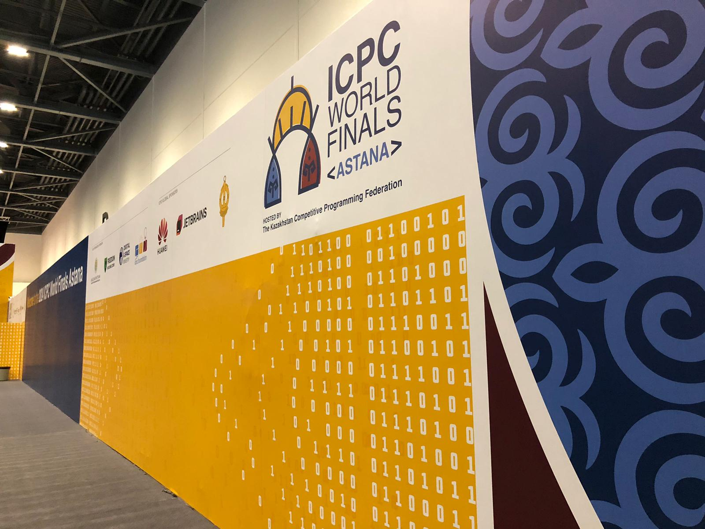
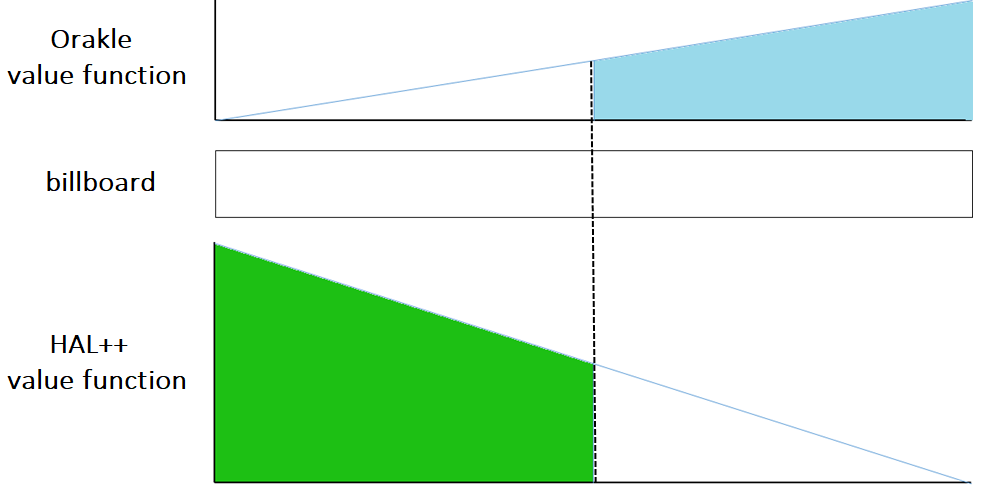

48th ICPC World Championship · Problem A
Each year, the ICPC (International Collegiate Programming Contest) has many sponsors. Since happy sponsors means happy contest, we plan to add a long billboard on one side of the contest area, so that our lovely sponsors can put their advertisements on it.
There are n wonderful sponsors in total, so to be fair, we would like to give each of them 1/n of the total area of the billboard. However, this is complicated by the fact that each marvelous sponsor potentially values sections of the billboard differently.

For example, some sponsors want to put their ads near the entrance of the contest area, which may be at the corner where all contestants are guaranteed to see them when they enter. On the other hand, some sponsors may just want to put their ads in the middle, which is more likely to be broadcast in the live stream. (Don’t ask us what happens if the entrance is at the middle! It’s just an example.)
After talking with all of our delightful sponsors, the ICPC staff finds that the preference values of each sponsor can be modeled as a continuous piecewise linear function, where the domain of each of these value functions is the length of the billboard. Given this information, the ICPC staff wants to split the billboard into n sections, and give them to our n sponsors so that each magnificent sponsor gets at least 1/n of the value of the billboard from their point of view. That is, the area of the value function under the section that each sponsor gets must be at least 1/n of the total area of their own value function.
Figure A.1 shows a simple example. The billboard length is 10 and there are two sponsors, Orakle Software and Hal++, both of them having a value function with only one piece. Orakle’s value function indicates that the company increasingly prefers sections of the billboard as you move left to right, while Hal++’s value function indicates the opposite. The area under each function is the total value of the billboard from each sponsor’s perspective. The blue and the green areas shown are both larger than half of each total area, so cutting the billboard in the middle (the dashed line) is a valid solution, resulting in the billboard shown in Figure A.2. Note that there are many other divisions of the billboard that work as well (for example, cuttings at 4 or 6 are also valid solutions, if the sections of billboards are given to the correct sponsor).

The first line contains two integers: n (1 ≤ n ≤ 5 000), the number of glorious sponsors that the ICPC has (numbered 1 to n), and l (1 ≤ l ≤ 106), the length of the billboard.
Each of the remaining n lines starts with an integer m (2 ≤ m ≤ 5 000), the number of points specifying this esteemed sponsor’s value function. The remainder of the line contains m pairs of integers (a1, b1), …, (am, bm) (0 = a1 < a2 < … < am = l, 0 ≤ bi ≤ 100), where each pair represents an endpoint of one section of the piecewise linear function. The sum of all m’s is at most 500 000 and it is guaranteed that at least one bi is positive for each sponsor.
Output n pairs of numbers (li, fi) (1 ≤ i ≤ n), which indicate that the billboard section in the range [li−1, li] is given to sponsor fi (where l0 = 0 is assumed, l0 < l1 < l2 < … < ln, and ln must be equal to l). The fi values must be integers in the range [1, n] where each integer appears exactly once, but the li can be real numbers. If there are multiple solutions, output any of them. If there is no solution, output impossible.
Note that you don’t need to optimize anything else, as long as each sponsor gets at least 1/n of their total area. Each sponsor’s allocated area may be below 1/n of their total area if the absolute or relative difference is at most 10−8.
2 10 2 0 0 10 5 2 0 10 10 0
5 2 10 1
5 100 5 0 0 10 0 20 1 30 0 100 0 5 0 0 10 0 20 1 30 0 100 0 5 0 0 10 0 20 1 30 0 100 0 5 0 0 10 0 20 1 30 0 100 0 5 0 0 10 0 20 1 30 0 100 0
16.3245553203 1 18.9442719100 2 21.0557280900 3 23.6754446797 4 100 5